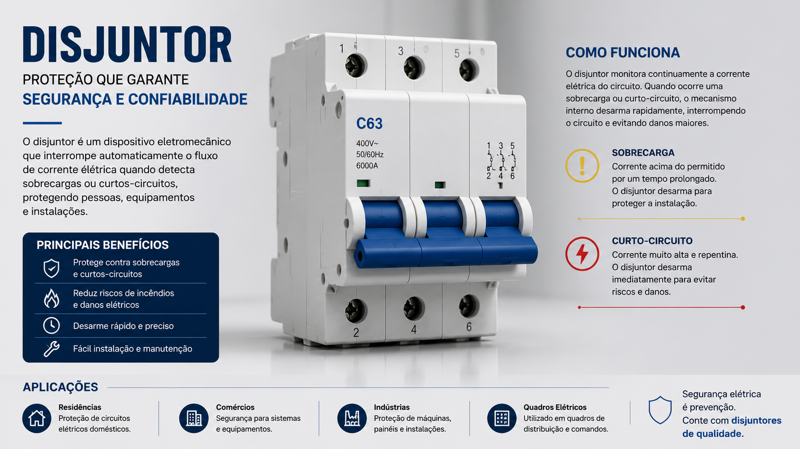
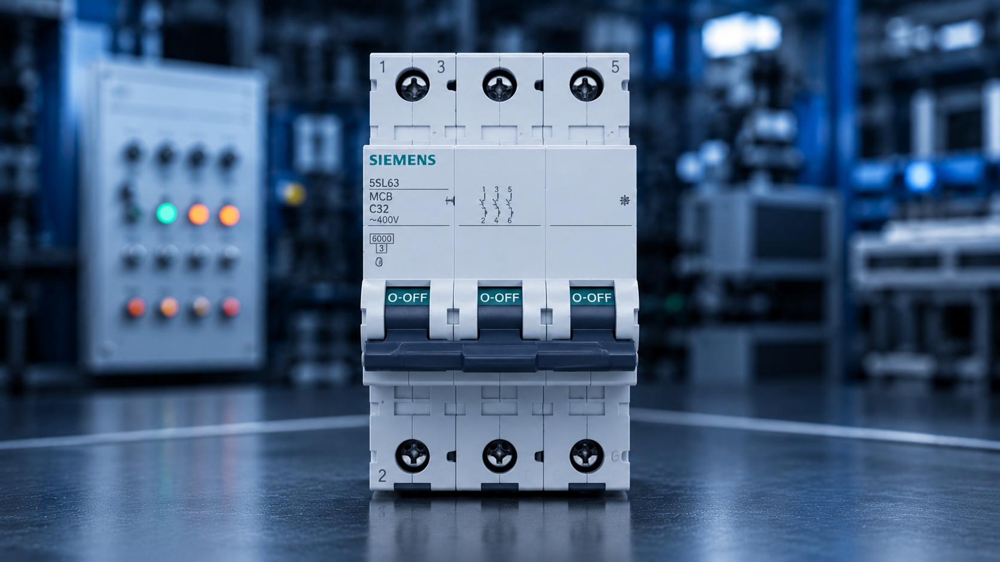
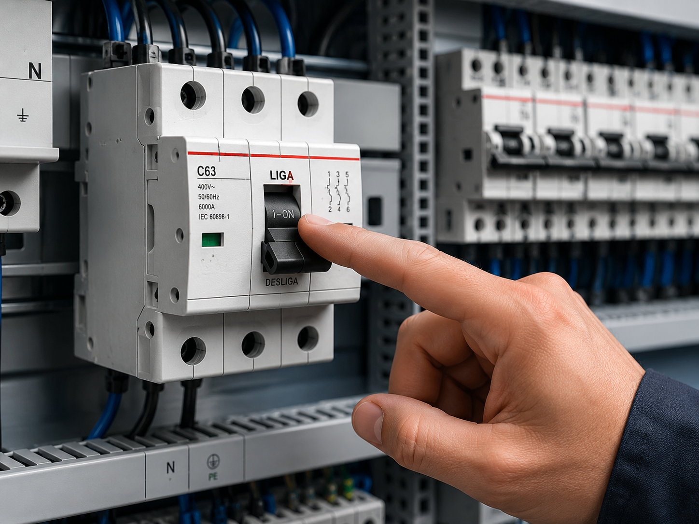
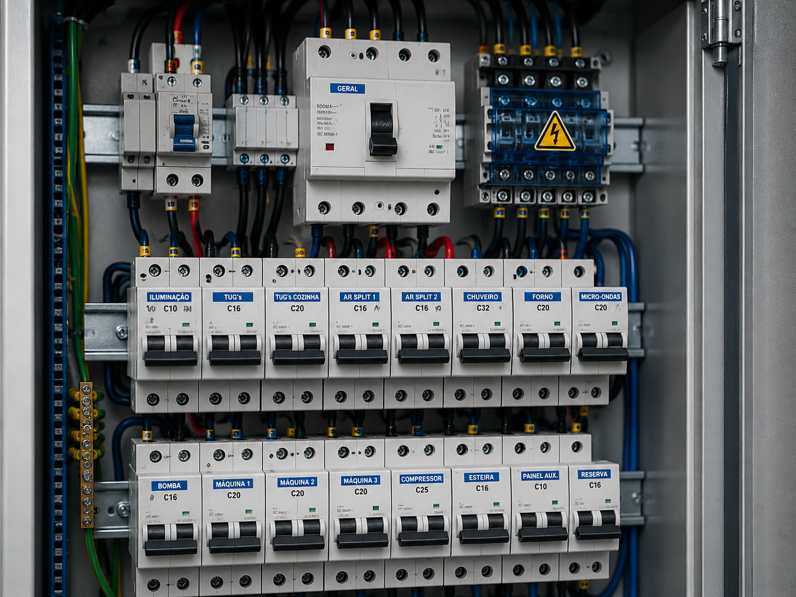

Disjuntor
Dispositivo de segurança eletromecânico que protege as instalações elétricas.




Conceito e Aplicação
O disjuntor é um dispositivo utilizado para proteger circuitos elétricos contra sobrecargas e curtos-circuitos.
- Proteção contra curto-circuito;
- Proteção contra sobrecarga;
- Permite desligamento manual;
- Utilizado em residências e indústrias;
Informações Complementares

Funcionamento
O disjuntor interrompe automaticamente o circuito quando detecta uma sobrecarga ou curto-circuito.
Saiba Mais
Aplicações
Dispositivos de proteção e manobra que interrompem a corrente elétrica em situações de sobrecarga ou curto-circuito.
Saiba Mais
Vantagens
A principal vantagem é interromper automaticamente o fluxo de corrente em casos de sobrecarga ou curto-circuito.
Saiba MaisEmpresas
As principais empresas que fabricam disjuntores são líderes globais em inovação e segurança. Em 2025, inúmeras marcas de disjuntores estão definindo padrões em qualidade e desempenho.
A WEG, a Siemens e a Schneider Electric são referências globais no setor elétrico, atuando na fabricação de disjuntores para proteção de instalações residenciais, comerciais e industriais. Suas soluções se destacam pela confiabilidade, segurança, eficiência energética e constante inovação tecnológica.
WEG: Empresa brasileira reconhecida mundialmente pela fabricação de equipamentos elétricos. Na área de disjuntores, oferece soluções para proteção de circuitos elétricos em aplicações residenciais, comerciais e industriais, com foco em segurança, eficiência e confiabilidade.
SIEMENS: Multinacional alemã que desenvolve tecnologias para energia e automação. Seus disjuntores são amplamente utilizados em sistemas de distribuição elétrica, destacando-se pela inovação tecnológica, alta performance e integração com sistemas inteligentes.
SCHNEIDER ELETRIC: Multinacional alemã que desenvolve tecnologias para energia e automação. Seus disjuntores são amplamente utilizados em sistemas de distribuição elétrica, destacando-se pela inovação tecnológica, alta performance e integração com sistemas inteligentes.